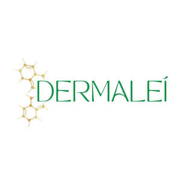

Trade Mark Journal No.2026/003 16 January 2026
UK00004317854 31 December 2025 (3,25,44)

- Class 3
- Foot smoothing stones; Foot scrubs; Non-medicated foot cream; Foot powder [non-medicated]; Non-medicated foot soaks; Soap for foot perspiration; Foot perspiration (Soap for -); Non-medicated foot lotions; Liquid soap used in foot baths; Foot balms (Non-medicated -); Exfoliating scrubs for the feet; Pumice stone; Pumice stones for use on the body; Liquid soap used in foot bath; Foot deodorant spray; Foot masks for skin care; Shoe and boot cream; Deodorants for the feet; Artificial pumice stone; Shoe cream; Shoe polish and creams; Pumice stones for personal use; Shaving stones; Shoe wax; Shoe black [shoe polish]; Non-medicated cosmetics; Non-medicated skincare preparations; Cosmetic moisturisers; Non-medicated cosmetics and toiletry preparations; Skincare cosmetics; Suncare lotions [for cosmetic use]; Cosmetic nourishing creams; Anti-ageing creams [for cosmetic use]; Facial moisturisers [cosmetic]; Skin balms [cosmetic]; Anti-aging creams [for cosmetic use]; Cosmetics and cosmetic preparations; Creams (Cosmetic -); Cosmetic creams; Non-medicated hair treatment preparations for cosmetic purposes; Cosmetic products in the form of aerosols for skincare; Skin cleansers [cosmetic]; Skin care lotions [cosmetic]; Moisturising skin lotions [cosmetic]; Cleansing creams [cosmetic]; Cosmetic facial lotions; Facial lotions [cosmetic]; Skin care creams [cosmetic]; Cosmetic creams for skin care; Acne cleansers, cosmetic; After-sun lotions [for cosmetic use]; Moisturising skin creams [cosmetic]; Facial cleansers [cosmetic]; Skin creams [cosmetic]; Skin creams [for cosmetic use]; Cosmetic creams for the skin; Anti-wrinkle creams [for cosmetic use]; Anti-aging moisturizers used as cosmetics; Self-tanning preparations [cosmetic]; Facial creams [cosmetic]; Facial creams [for cosmetic use]; Skin cleansers [non-medicated]; Anti-ageing serums for cosmetic purposes; Non-medicated skin lotions; Non-medicated moisturisers; Hair care creams [for cosmetic use]; Cosmetic sun-protecting preparations; Hair care lotions [for cosmetic use]; Skin whitening preparations [cosmetic]; Anti-aging skincare preparations; Skin balms (Non-medicated -); Non-medicated skin balms; Moisturisers [cosmetics]; Skin creams [non-medicated]; Non-medicated skin creams; Skin care (Cosmetic preparations for -); Cosmetic preparations for skin care; Non-medicated cleansing creams; Non-medicated skin serums; Sunscreens [for cosmetic use]; Non-medicated lotions; Cosmetic hair lotions; Cosmetic massage creams; Facial creams [cosmetics]; Lotions for cosmetic purposes; Skin moisturizers used as cosmetics; Non-medicated skin clarifying lotions; Cosmetic soaps; Non-medicated beauty preparations; Hydrating creams for cosmetic use; Cosmetic sunscreen preparations; Non-medicated creams; Skin hydrators for cosmetic purposes; Non-medicated skin care preparations; Dermatological creams [other than medicated]; Skin care oils [non-medicated]; Aromatherapy creams; Moisturising body lotion [cosmetic]; Moisturising creams; Skin lotions; Body and facial creams [cosmetics]; Cosmetic hand creams; Exfoliating scrubs for cosmetic purposes; Cleansing creams; Lip balm [non-medicated]; Skin care oils [cosmetic]; Skin cleaners [non-medicated]; Skin moisturizers; Skin moisturizer masks; Skin care creams, other than for medical use; Hair care preparations, not for medical purposes; Skin care cosmetics; Body care cosmetics; Lip care preparations; Cosmetic nail care preparations; Soaps for body care; Exfoliating scrubs for the hands; Exfoliating scrubs for the body; Exfoliating scrubs for the face; Cosmetic body scrubs; Body scrubs [cosmetic]; Facial scrubs [cosmetic]; Exfoliating body scrub; Face scrubs (Non-medicated -); Exfoliants for the care of the skin; Massage creams, not medicated; Milky lotions for skin care; Scented body lotions and creams; Gel scrub; Perfumed oils for skin care; Skin cleansing cream [non-medicated]; Cosmetic mud masks; Body scrubs; Exfoliants for the cleansing of the skin; Massage oils and lotions; Massage oils, not medicated; Moist wipes impregnated with a cosmetic lotion; Cold creams for cosmetic use; Bath crystals, not for medical use; Blemish balm creams; Natural cosmetics; Beauty balm creams; Cleansers for intimate personal hygiene purposes, non medicated; Floral water for cosmetic purposes.
- Class 25
- Toe socks; Ankle socks; Stockings (Heel pieces for -); Heel pieces for stockings; Slipper socks; Foam pedicure slippers; Heel protectors for shoes; Bed socks; Water socks; Insoles [for shoes and boots]; Insoles for shoes and boots; Non-slip socks; Socks; Pedicure slippers; Inner socks for footwear; Socks and stockings; Anklets [socks]; Woollen socks; Footless socks; Trouser socks; Sweat-absorbent socks; Thermal socks; Men's socks; Socks for men; Sports socks; Socks for infants and toddlers; Stockings (Sweat-absorbent -); Sweat-absorbent stockings; Hosiery; Insoles for footwear; Soles for footwear.
- Class 44
- Foot care; Foot massage services; Aromatherapy services; Consultancy services relating to beauty; Hygienic and beauty care; Hygienic and beauty care for humans; Hygienic and beauty care services; Provision of hygienic and beauty care services; Beauty care services provided by a health spa; Beauty spa services; Cosmetic body care services provided by health spas; Consultancy in the field of body and beauty care; Cosmetic body care services; Providing information about beauty; Cosmetic treatment services for the body, face and hair.
Leanne O'Hagan